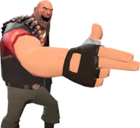

Arsenal

Minigun

Espingarda

Punhos
O Heavy é um homem imponente vindo da URSS . Ele é frequentemente considerado a cara do jogo, devido à sua aparição proeminente na arte da caixa, materiais promocionais e telas de carregamento. Ele estrelou o primeiro vídeo Meet the Team e apareceu em todos os outros filmes até hoje.
O Heavy é a maior e provavelmente a mais perigosa classe em Team Fortress 2 – ostentando a maior saúde básica , combinada com o poder de fogo devastador de sua fiel Minigun . Esta arma pode infligir grandes danos a uma taxa de tiro muito alta, permitindo que ele derrube bebês, covardes e homenzinhos adversários em meros segundos. Sendo a classe mais lenta do jogo, a velocidade de movimento do Heavy é sua principal fraqueza. Ao acelerar ou disparar sua Minigun, sua velocidade já inexpressiva cai para uma quantidade ainda menor, tornando-o um alvo muito fácil para Snipers e Spies . Sua velocidade lenta o torna mais dependente do suporte de médicos e engenheiros para mantê-lo ativamente na luta. Como resultado de sua estatura corpulenta, ele também leva 50% menos knockback da maioria das fontes de dano - excluindo balas de Sentry Gun .
Além de dizimar equipes inteiras, o Heavy é capaz de fornecer mais suporte para seus camaradas com um aumento de saúde frequentemente necessário por meio de seu Sandvich , que, quando consumido, é capaz de curá-lo até a saúde total. Ele também pode ser descartado para fornecer um aumento instantâneo de saúde de 50% para seus companheiros de equipe, sistematicamente igual a um kit de saúde médio . No entanto, se o Heavy não for cuidadoso, um inimigo pode pegar o Sandvich caído para aumentar sua saúde.
O Heavy é dublado por Gary Schwartz .